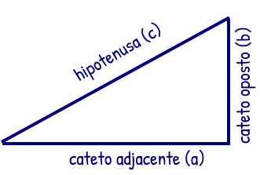

Teorema de Pitágoras
c
² =
² +
²
Calcular
clique em "a" e "b" e digite os números para calcular!
Pitágoras observou que ao desenhar um quadrado em cada lado do triangulo retângulo, a área dos menores somadas é igual a área do quadrado maior.
Vale apenas para
triângulos retângulos!
Hipotenusa sempre o
maior lado!
